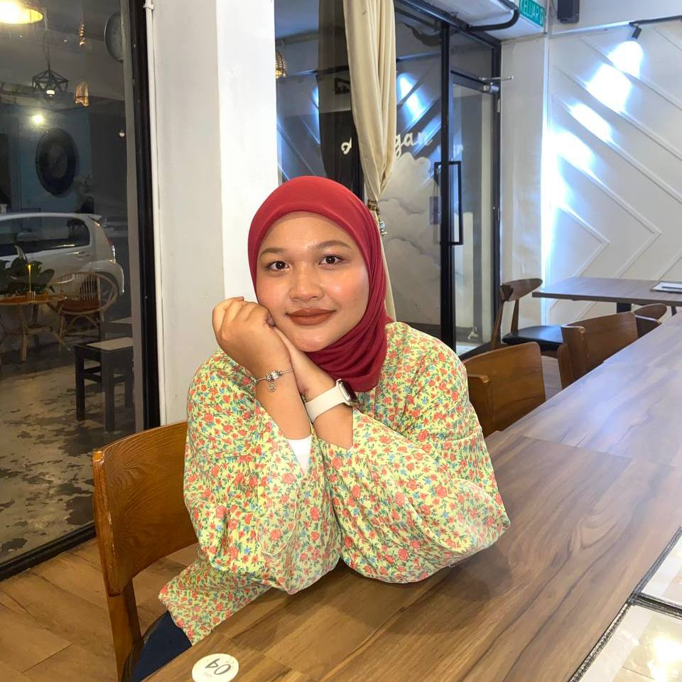

My name is Nurelisya Damia bt Sharul Fadzri, a 20-year-old Part 5 Information Management student. I am passionate about designing, multimedia, and leadership, which allow me to express creativity and inspire others. Known for my happy-go-lucky personality, I approach challenges with positivity and strive to make the most of every opportunity to learn and grow.
In the future, I aim to achieve several goals that align with my passion and aspirations. Firstly, I want to establish a successful career in public relations, becoming a trusted professional who builds meaningful connections and effectively represents organizations. Secondly, I hope to enhance my skills in designing and multimedia to create impactful campaigns and projects that inspire and engage audiences. Lastly, I aspire to take on leadership roles where I can guide and empower others, contributing to a positive and collaborative environment. Through continuous learning and perseverance, I am determined to turn these goals into reality.